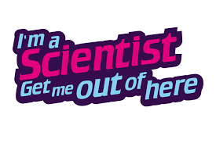

Evaluation of Academy Zone
SW Creative Technology Network
At the minute, my research interests include the role of iconicity in language evolution, metaphor in science and technology communication, cognitive aspects of science communication, science fiction and comedy as tools for public engagement in science, and public understanding of data governance and rights.
For research collaborations or more information:
Email me
Selected Publications
full list here
2022 Little, Hannah . What makes good research communication? in Communicating Linguistics: Language, Community and Public Engagement. Price, H. & McIntyre, D. (eds.). Abingdon: Routledge
2022 Little, Hannah , Laura Fogg-Rogers and Ana Margarida Sardo. The Christmas Lectures: Extending the experience outside the lecture theatre JCOM: Journal of Science Communication .
2021 Sardo, Ana Margarida, Hannah Little and Laura Fogg-Rogers. Transforming tradition: how the iconic Christmas Lectures series is perceived by its audiences International Journal of Science Education, Part B 11 (04)
2021 Wilkinson, Clare and Hannah Little “We had to be very clear that they weren't going to try to break into any of the cases": what potential do ‘escape rooms’ offer as a science communication technique? JCOM: Journal of Science Communication . doi: 10.22323/2.20010307
2021 Studley, Matthew & Hannah Little . Robots in Smart Cities. How Smart is your City . Springer.
2020 Roberts, Seán G , Anton Killin, Angarika Deb, Catherine Sheard, Simon J Greenhill, Kaius Sinnemäki, José Segovia-Martín, Jonas Nölle, Aleksandrs Berdicevskis, Archie Humphreys-Balkwill, Hannah Little , Christopher Opie, Guillaume Jacques, Lindell Bromham, Peeter Tinits, Robert M Ross, Sean Lee, Emily Gasser, Jasmine Calladine, Matthew Spike, Stephen Francis Mann, Olena Shcherbakova, Ruth Singer, Shuya Zhang, Antonio Benítez-Burraco, Christian Kliesch, Ewan Thomas-Colquhoun, Hedvig Skirgård, Monica Tamariz, Sam Passmore, Thomas Pellard and Fiona Jordan. CHIELD: the causal hypotheses in evolutionary linguistics database. Journal of Language Evolution . doi: 10.1093/jole/lzaa001
2019 Little, Hannah . Communicating Science: Lessons from a Twitterstorm. JCOM: Journal of Science Communication . doi: 10.22323/2.18040101
2019 Motamedi, Yasamin, Hannah Little , Alan Nielsen and Justin Sulik. The iconicity toolbox: empirical approaches to measuring iconicity. Language and Cognition . doi: 10.1017/langcog.2019.14
2018 Perlman, Marcus, Hannah Little , Bill Thompson and Robin L. Thompson. Iconicity in Signed and Spoken Vocabulary: A Comparison between American Sign Language, British Sign Language, English, and Spanish. Frontiers in Psychology . doi: 10.3389/fpsyg.2018.01433
2017 Little, Hannah . Introduction to the Special Issue on the Emergence of Sound Systems. The Journal of Language Evolution 2(1) 1-3. doi: 10.1093/jole/lzx014
2017 Little, Hannah , Kerem Eryilmaz and Bart de Boer. Signal dimensionality and the emergence of combinatorial structure. Cognition 168 1-15. doi: 10.1016/j.cognition.2017.06.011
2017 Little, Hannah , Kerem Eryilmaz and Bart de Boer. Conventionalisation and Discrimination as Competing Pressures on Continuous Speech-like Signals. Interaction Studies, 18(3). 355 – 378. doi: 10.1075/is.18.3.04lit
2017 Little, Hannah , Heikki Rasilo, Sabine van der Ham and Kerem Eryilmaz. Empirical approaches for investigating the origins of structure in speech. Interaction Studies, 18(3). 332 – 354. doi: 10.1075/is.18.3.03lit
2017 Little, Hannah , Marcus Perlman and Kerem Eryilmaz. Repeated Interactions Can Lead to More Iconic Signals. In G. Gunzelmann, A. Howes, T. Tenbrink, & E. Davelaar (Eds.) Proceedings of the 39th Annual Conference of the Cognitive Science Society (pp. 760–766). Austin, TX: Cognitive Science Society
2016 Eryilmaz, Kerem and Hannah Little . Using Leap Motion to investigate the emergence of structure in speech and language. Behavior Research Methods. 49(5) 1748–1768. doi:10.3758/s13428-016-0818-x
2015 Little, Hannah , Kerem Eryilmaz and Bart de Boer. Linguistic Modality Affects the Creation of Structure and Iconicity in Signals.; In D. C. Noelle, R. Dale, A. S. Warlaumont, J. Yoshimi, T. Matlock, C. D. Jennings, & P. P. Maglio (Eds.), Proceedings of the 37th Annual Conference of the Cognitive Science Society (pp. 1392-1398). Austin, TX: Cognitive Science Society.
For a full list of publications including edited books, conference proceedings, book reviews, reports and presentations, please go here or see my CV.
Curriculum vitae